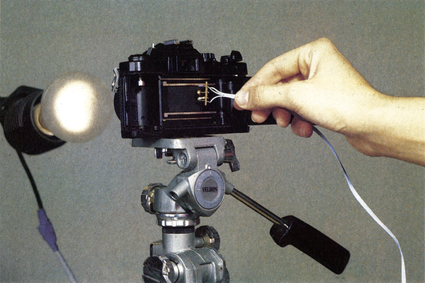
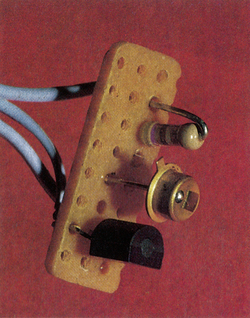
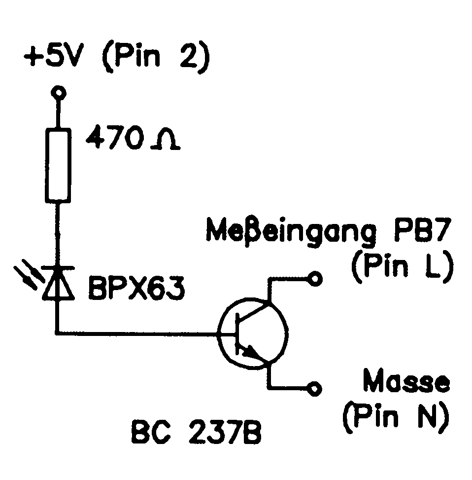
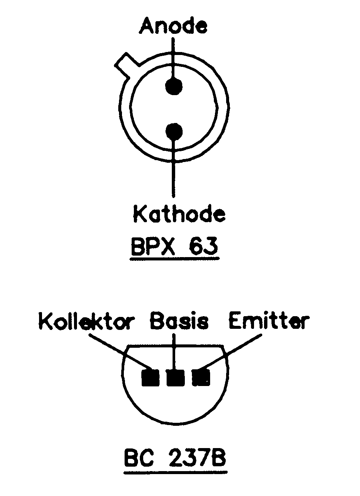

Augenzwinkern
Stimmen die Verschlußzeiten Ihrer Fotokamera? Mit dieser kleinen Schaltung können Sie es prüfen.
Wollten Sie nicht schon immer wissen, wie genau Ihre Fotokamera wirklich ist? Als wir diese Schaltung in die Hände bekamen, war der erste Weg geradewegs in unser Fotostudio. Unsere Kameras mußten erst einmal herhalten. Die Meßergebnisse weckten jedoch unser Interesse erst richtig. Alle Fotokameras, die in der Redaktion aufzutreiben waren, mußten getestet werden. Erstaunliche Erkenntnisse gab es dabei. Das alte Sprichwort »es ist nicht alles Gold, was glänzt« zeigte auch in dieser Hinsicht seine Bedeutung. Aber überprüfen Sie Ihre Kamera doch einmal selbst.
Interessantistauch der geringe Aufwand für die Messung (Bild 1). Die Schaltung läßt sich selbst auf einem kleinen Rest Lochrasterplatine noch aufbauen (Bild 2). Auch das notwendige Programm ist recht kurz (Listing). Alles in allem — klein aber fein.


Ein wenig Hardware genügt
Ein Blick auf den Schaltplan (Bild 3) läßt erkennen, daß nur wenige elektronische Bauelemente notwendig sind. Eine Fotodiode, ein Transistor, und ein Widerstand, das war's. Die Fotodiode arbeitet in Sperrichtung. Im Bild 4 finden Sie die Anschlüsse der Fotodiode und des Transistors. Die Schaltung wird an den User-Port angeschlossen. Das Kabel zwischen der Platine und dem User-Port sollte nicht länger als 75 cm sein. Für den Kauf der notwendigen Bauteile haben wir Ihnen die Stückliste (Tabelle) zusammengestellt.


| Stückliste | |
|---|---|
| 1 | Transistor BC 237B |
| 1 | Fotodiode BPX 63 |
| 1 | Widerstand 470 Ω |
| 1 | User-Port-Stecker |
| 75 | cm Kabel 3adrig |
Die Funktion der Schaltung (Bild 3) ist ebenfalls einfach. Die Fotodiode (BPX 63) hat bei Dunkelheit einen sehr hohen Sperrwiderstand. Durch Lichteinfall wird sie niederohmig und steuert den Transistor (BC 237B) auf. Der Meßeingang PB7 (Pin L) wird so über den Transistor gegen Masse (Pin N) gelegt, wenn auf die Fotodiode Licht fällt.
Die notwendige Steuer-Software finden Sie im nebenstehenden Listing. Das Programm wartet nach dem Start bis Pin L des User-Ports auf Masse gelegt wird. Ist dieses erfolgt, wird der Timer A gestartet. Etwa 15mal je Sekunde treten Überläufe auf, die vom Timer B gezählt werden. Ist Pin L wieder logisch High (kein Lichteinfall), dann werden die Timer angehalten und ausgelesen.
Alle wichtigen Routinen sind in einem kleinen Maschinenprogramm untergebracht. Es ist in Form von DATA-Zeilen im Basic-Programm enthalten. Die Abfrageroutine des User-Ports läßt Meßwerte bis zirka Yoo0oo Sekunde zu. 72 Sekunden beträgt die längste Meßzeit.
So wird gemessen
Der Meßaufbau ist im Bild l zu sehen. Vor die Kamera wird in einem abgedunkelten Raum eine Lampe mit einer Leistung von 40 bis 60 Watt gestellt, Entfernung etwa einen halben Meter. Es sollte allerdings keine Leuchtstoffröhre verwendet werden. Die Blende am Objektiv muß offen sein. Die Fotodiode halten Sie hinter das aufgeklappte Gehäuse. Sie sollte in der Mitte hinter dem Verschluß sein, möglichst in der Ebene, wo sonst der Film ist. Nun starten Sie das Programm. Wenn »meßbereit« auf dem Bildschirm zu lesen ist, können Sie den Auslöser * betätigen. Bei Belichtungszeiten über einer Sekunde erscheint der genaue Meßwert in Sekunden auf dem Bildschirm. Ist die gemessene Zeit unter einer Sekunde, dann wird links der Zeitwert ausgegeben. Bei sehr kurzen Belichtungszeiten erfolgt eine Angabe mit Zehner-Exponent. Ein Wert von 6.0 E-3 bedeutet beispielsweise 6 x 10-3 Sekunden = 6 Millisekunden. Auf der rechten Seite finden Sie den gemessenen Wert, umgerechnet als Bruch. So können Sie den gemessenen Wert direkt mit der Einstellung an der Kamera (beispielsweise 1/125) vergleichen. Eine neue Messung rufen Sie auf, indem Sie die Taste <SPACE> drücken.
Sollte auf dem Bildschirm kein Meßwerteerscheinen, so kann dies zwei Gründe haben:
-
Es ist im Raum zu hell. Das Programm mißt dann noch. Sie können die Messung abbrechen, indem Sie die Fotodiode mit dem Finger verdunkeln.
-
Die Lampe ist zu dunkel oder das Licht fällt nicht auf die Fotodiode. Es hat also noch keine Messung stattgefunden. Halten Sie die Fotodiode direkt ins Licht und verdunkeln Sie sie wieder. Jetzt müßte ein Meßwert auf dem Bildschirm erscheinen.
Natürlich haben wir für Sie das Meßsystem nochmals genau überprüft und mit einem professionellem Verschlußzeiten-Meßgerät für etwa 12000 Mark Vergleichsmessungen durchgeführt. Bis zu einer Belichtungszeit von %oo konnten keine wesentlichen Unterschiede festgestellt werden. Ab Yıooo traten Differenzen auf. Ursache sind die Ungenauigkeiten des Meßaufbaus. Bei Yiooo ergaben sich gegenüber dem professionellen Meßgerät etwa 10 Prozent langsamere Meßwerte. Bei Y4ooo waren die Meßwerte um etwa 30 Prozent langsamer. Damit Sie nicht einen falschen Eindruck von Ihrer Kamera bekommen, wollen wir Ihnen auch sagen, daß bis zu einer Verschlußzeit von oo Toleranzen von +10 Prozent absolut normal sind. Ab Yooo dürfen die Toleranzen auch größer sein und bei !%ooo bis zu +25 Prozent betragen.
Zum Schluß noch eine weitere fotografische Anwendung. Sie können mit der Schaltung auch die genauen Blitzzeiten Ihres Blitzgerätes messen. Bei elektronischen Blitzgeräten mit einer hohen Leitzahl entstehen durchaus Zeiten unter %oooo Sekunde, wenn das Gerät gegen eine weiße Wand gerichtet wird. Probieren Sieesdoch selbst.
(W. Brüchle/kn)